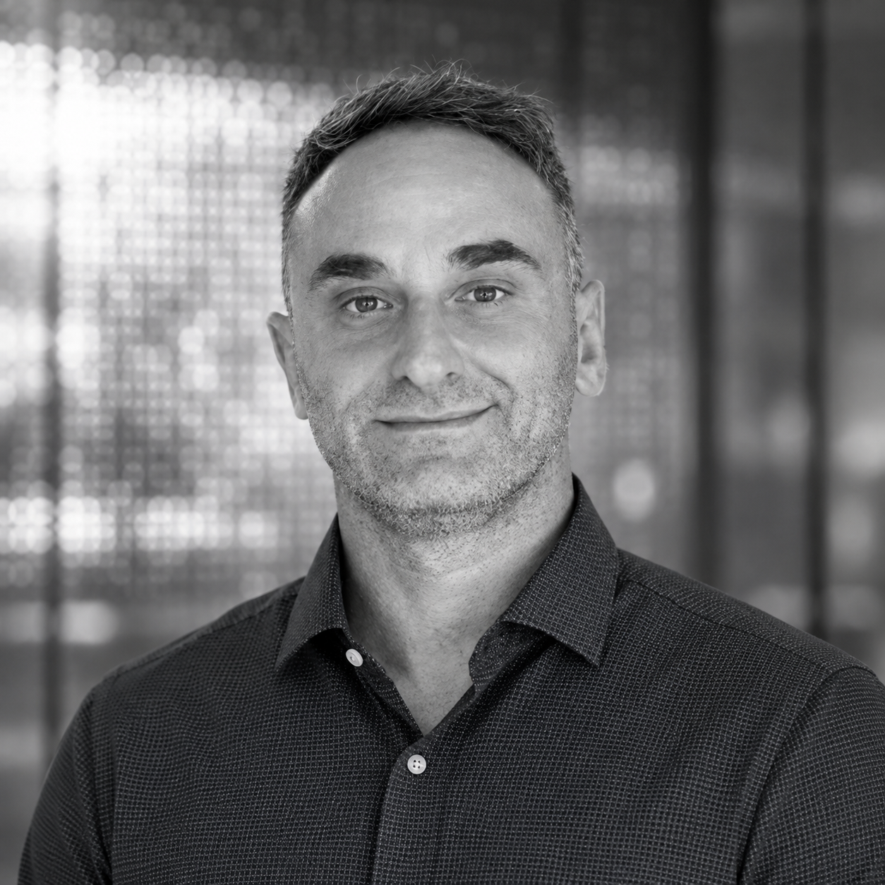
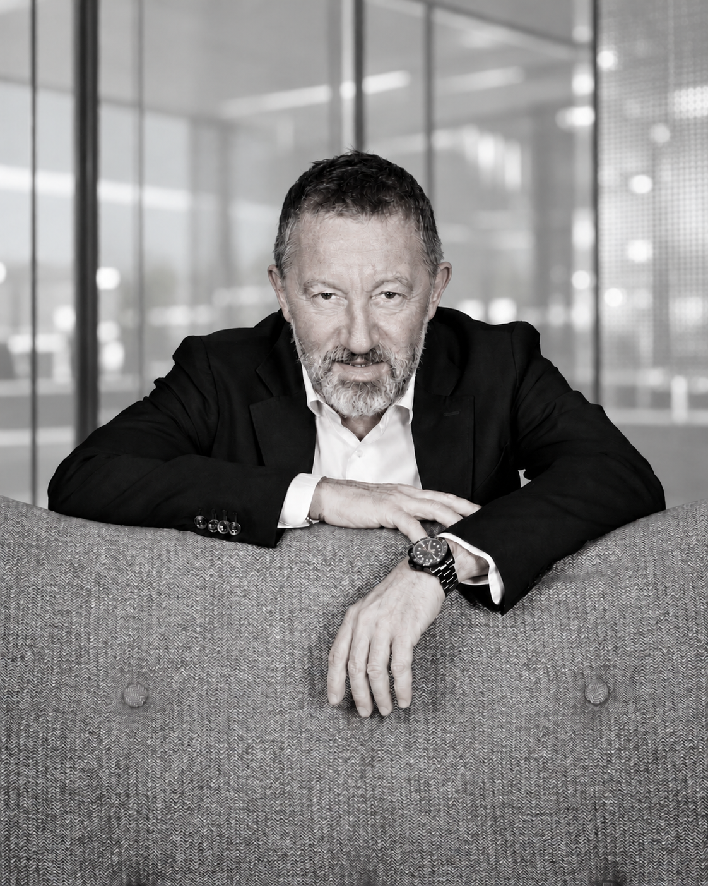
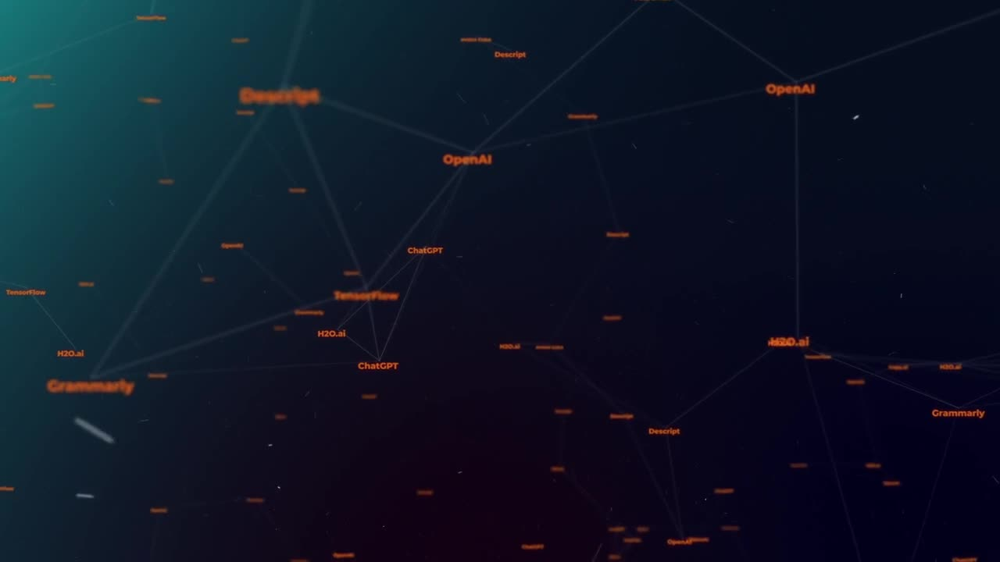

ONE PLATFORM
Tailored to your decisions
INTRIVON X brings valuation, investment monitoring, risk analysis and reporting into one platform. We tailor its models and scenarios to your data, workflows and decision priorities.
INTRIVON combines financial expertise, decision science and AI to build tailored platforms that help business leaders, owners and investors create enterprise value.
CONTACT USWe translate complex business questions into tailored applications. Working with your team, we define objectives, assess strategic options and integrate the application into your systems and workflows, so you can make decisions with a comprehensive understanding of the trade-offs.
INTRIVON X brings valuation, investment monitoring, risk analysis and reporting into one platform. We tailor its models and scenarios to your data, workflows and decision priorities.
Review available data, reconcile definitions and identify gaps. Establish the financial and operational baseline for the analysis.
Use forecasts, simulations and sensitivity analysis to assess alternatives, quantify trade-offs and test the assumptions behind each choice.
Turn analysis into actionable insights. Compare alternatives, understand their financial and operational implications, and select the course of action that best supports your strategic objectives.
INTRIVON brings together expertise in decision science, financial markets and AI development to address complex business questions. We help clients determine which risks to manage, where to invest and which opportunities to pursue within their business and across the market.

We collaborate with a global financial advisory firm headquartered in the United States and active across North America, Europe and Asia. Together, we combine financial and strategic expertise with AI to build tailored platforms that help clients evaluate investments, plan for growth and assess new opportunities.
Our team brings together financial and market experience, academic expertise in decision science, and AI application development. Together, we combine rigorous analysis with practical business judgment.
Chief Executive Officer
Investment banker and strategic advisor with more than 30 years of experience. Former Managing Director at Goldman Sachs and Citigroup in New York.
Director of Research & Development
Professor of Finance at the Athens University of Economics and Business with a PhD in Finance. Researches investment decisions and optimization models.

Director of AI Application Development
Assistant Professor of Mathematical Economics at UoI. Works across FinTech RnD and AI agentic orchestrated applications.

Senior Advisor, Strategic Growth
Founder and strategic growth advisor with over 30 years of experience. Advises on M&A, corporate funding and cross-border expansion.
Select the services your application needs, individually or in combination. Each capability addresses a distinct part of the investment or operating challenge.

Model businesses, assets and projects. Identify the assumptions that drive value and assess how operating performance, financing and strategic choices affect investment outcomes and enterprise value.

Stress-test financial and operating assumptions. Compare investment alternatives under different demand and capital structure scenarios to understand downside exposure.

Track investments and business units against expectations. Compare performance, risk and investment needs to support portfolio reviews and decisions on where to deploy capital.

Bring performance, forecasts and risk into consistent reporting for leadership and owners, with figures linked to source data and model assumptions.

Evaluate markets, acquisitions and partnerships. Test commercial assumptions, compare strategic fit and quantify potential synergies to support growth and transaction decisions.
Connect and reconcile data sources in tailored AI applications. Help users explore business questions and compare options by showing the evidence and calculations behind each result and making clear where expert review is required.

Forecast demand, cash flow and resource needs. Optimize capacity, networks and operating choices to improve profitability and capital efficiency within real-world constraints.

Assess data readiness, prioritize valuable AI use cases and compare build-or-buy options. Define a practical roadmap from business need to a tailored decision-support application.
Industry economics, operating constraints and reporting requirements shape how each application is configured.
Optimize networks and investment outcomes
Evaluate network expansion, capacity, pricing and service levels. Model demand, operating costs and working capital to compare investment choices, improve margins and assess how each investment contributes to enterprise value.
Evaluate capacity, investment value and risk
For data centers, assess power availability, capacity expansion and lease assumptions. For energy businesses, model how changes in commodity prices, operating margins and financing costs affect project value, cash flow and capital allocation.
Compare performance and allocate capital
Compare operating performance and capital needs across business units. Evaluate expansion, acquisitions and potential synergies through consistent financial models, helping leadership prioritize the allocation of resources across the group.
Prioritize projects and track public value
Evaluate investment priorities, budgets and delivery risks. Compare project alternatives, track milestones and measure economic and service outcomes, giving decision-makers traceable evidence for resource allocation, accountability and oversight.
Monitor portfolio valuation and risk
Assess how changes in cash flow and financing affect the value and risk of private investments. Use the findings to review portfolios, inform credit decisions and report consistently to stakeholders.
Assess development cash flow and value
Evaluate property investments by modeling lease income, construction costs, funding needs and delivery schedules. Compare phased development options and test how market conditions and execution risks affect cash flow and value.
We tailor each solution to your business, use AI with expert oversight and measure performance and efficiency. We check the accuracy of our analysis and protect your information.
We agree with you on what success looks like and how to measure it. We track progress against those measures to assess how the solution contributes to your business objectives.
We use AI where it adds value to the analysis. For each task, we define what AI can do, where its limits lie and when an expert must review the results.

We design each application around your workflows and access requirements. We adapt the interface, models and integrations to the people who use the results and the decisions they need to make.
We reduce manual work and delays in recurring analysis and reporting. We measure time and cost savings against your starting point and keep the checks that make the results reliable.
We document sources, assumptions and calculations so you can verify the results. Before you use them, we reconcile figures, check for inconsistencies and explain where data is missing and how uncertainty affects the results.
We agree with you on who may view, process and share your information. We set access controls and assign responsibilities according to the sensitivity of the data.